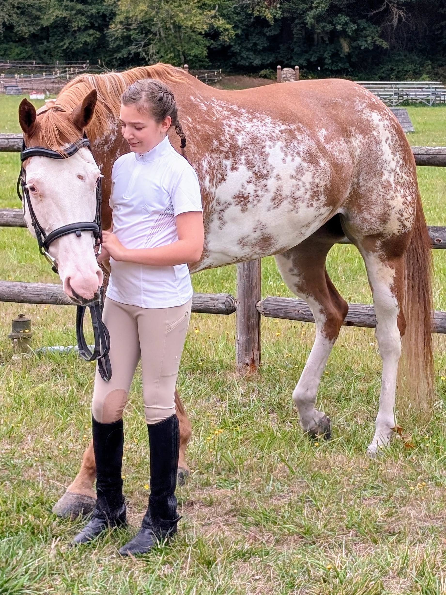

Equestrian and pasture photography — horses at rest, in motion, and in the quiet hours between.

I've spent the last six years photographing horses on the same handful of farms — the light at feeding time, the stillness before a ride, the moment a herd breaks into a run.
Prints are made on archival cotton rag paper, available in three sizes on request.